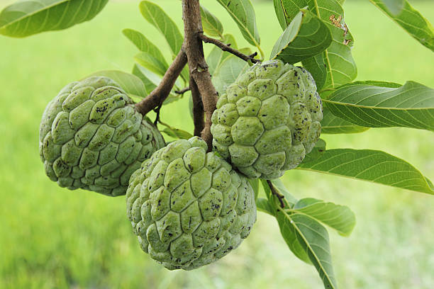

Custard Apple (Annona squamosa)
Scientific Name: Annona squamosa
Description: Custard Apple, also known as Sugar Apple, is a tropical fruit-bearing tree native to the Americas. The plant produces a green, knobby fruit with sweet, creamy flesh that is often eaten fresh. It thrives in warm climates and is valued for its delicious fruit and fragrant flowers. The plant has large, broad leaves and is commonly grown for both ornamental and fruit production purposes.
Care Tips:
- Water: Regular watering is essential, especially during dry periods. Ensure the soil is well-drained to prevent root rot.
- Light: Prefers full sun, but can tolerate partial shade. However, to produce the best fruit, it should receive at least 6 hours of direct sunlight daily.
- Temperature: Best suited for tropical and subtropical climates. The ideal temperature range is between 70°F to 85°F (21°C to 29°C).
- Humidity: Thrives in humid conditions, so occasional misting or planting in a humid location can promote healthy growth.
Medicinal Uses:
Custard Apple has numerous health benefits and medicinal uses. The seeds, leaves, and fruit are used in traditional medicine. The fruit is rich in vitamins, particularly vitamin C, and is known to have antioxidant properties. It is commonly used as a natural remedy for digestive issues such as constipation. The seeds are believed to have anti-parasitic properties, and the leaves can be used as a poultice to treat skin infections and inflammation. In some cultures, the fruit and leaves are also used as a natural remedy for stress and anxiety.